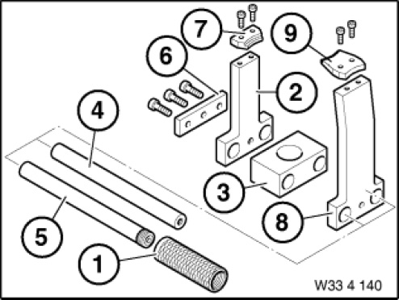

33 4 140 Device
33 4 140 Device
0492397
Minimum set: Mechanical tools
MW

NOTE: For removing rubber mount in rear axle support.
Storage Location: A8
B8
SI number: 01 02 99 (417)
Consisting of:
1 = 0492398 Pipe
NOTE: (Threaded pipe)
2 = 0492399 Shaped part
NOTE: (Shaped part) 2 pieces Model series: E38, E39, E46
3 = 0492400 Shaped part
NOTE: (shaped part)
4 = 0492401 Rod
NOTE: (Guide rod)
5 = 0492402 Rod
NOTE: (Guide rod) With thread dog point
6 = 0492403 Plate
NOTE: (Locating plate) With screws
7 = 0492404 Synchronizing key
NOTE: (Synchronizing key (2 x)) With screws - model series: E38, E39, E46
8 = 0492405 Shaped part
NOTE: (Shaped part) 2 pieces Model series: E39/2, E65, E67, RR1
9 = 0492406 Synchronizing key
NOTE: (Synchronizing key (2 x)) With countersunk screw - model series: E39/2, E65, E67, E87